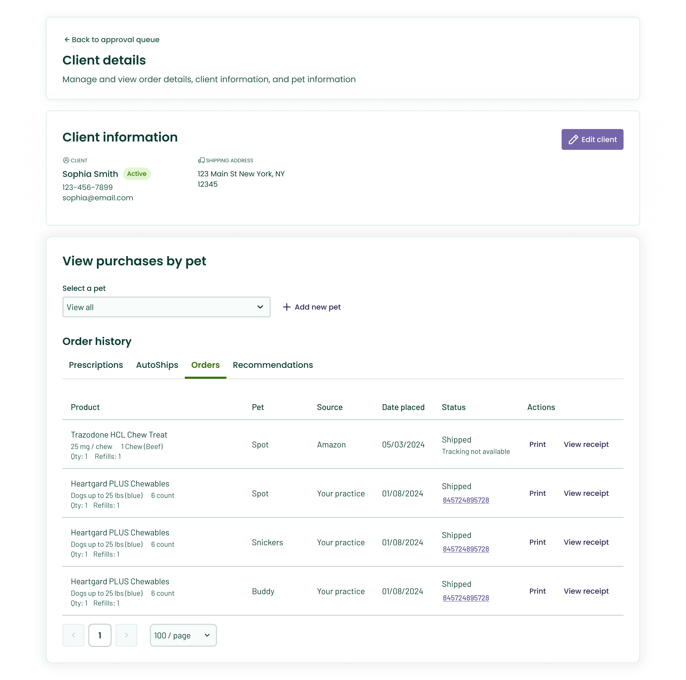
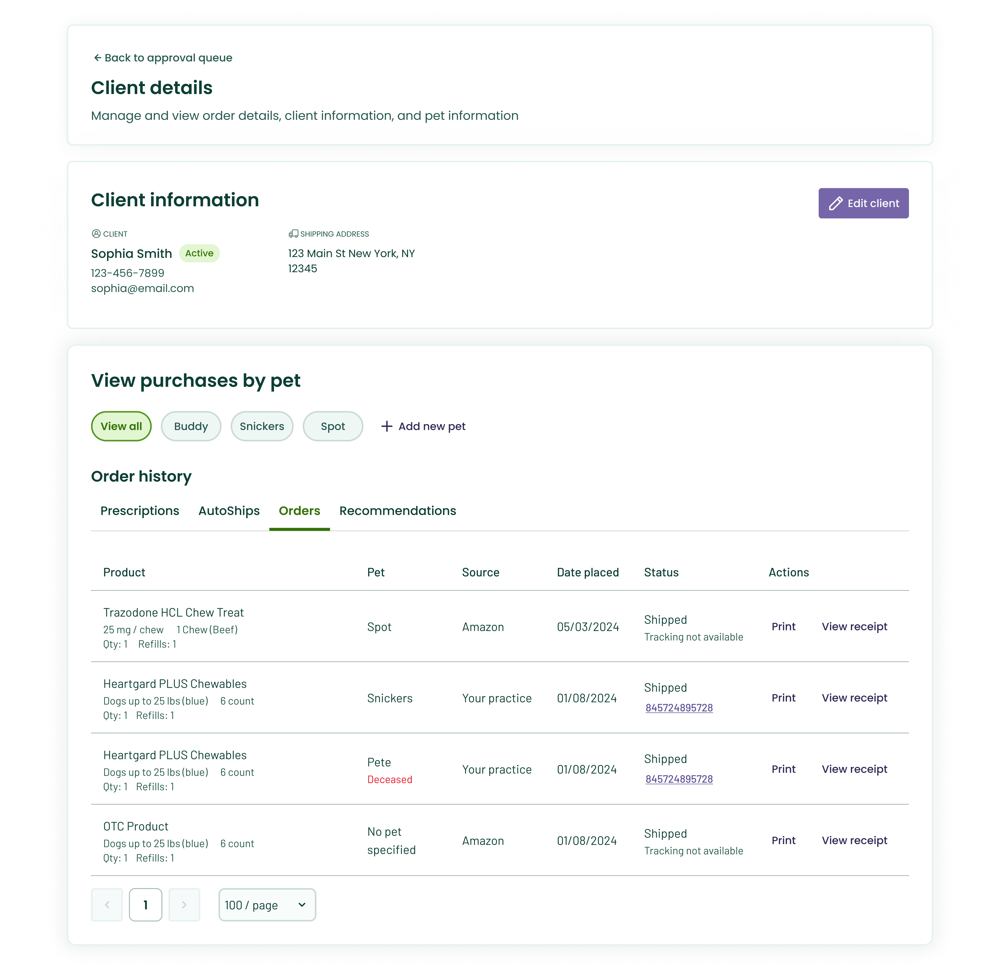
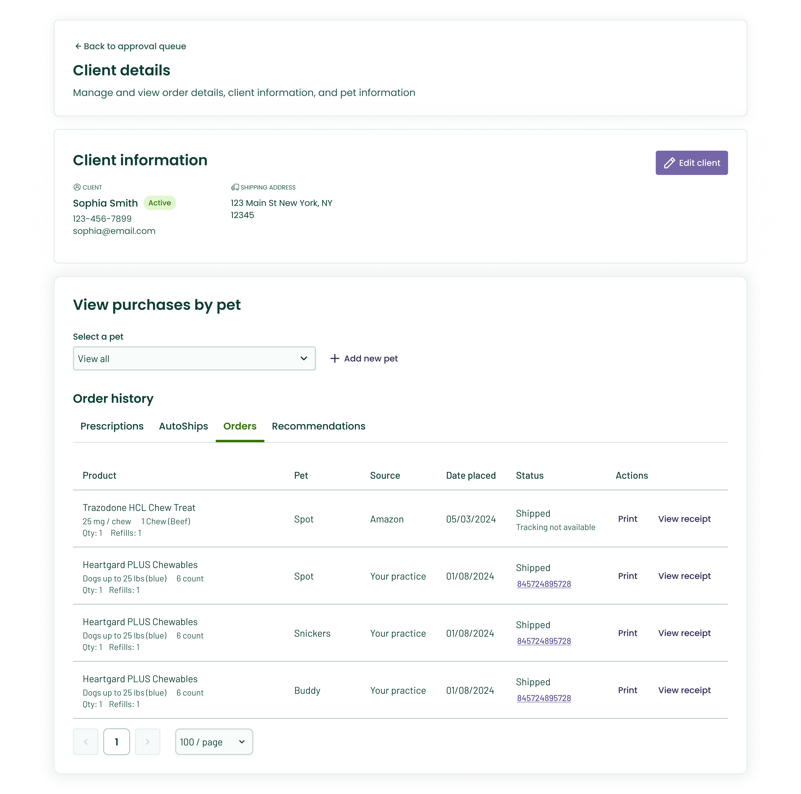
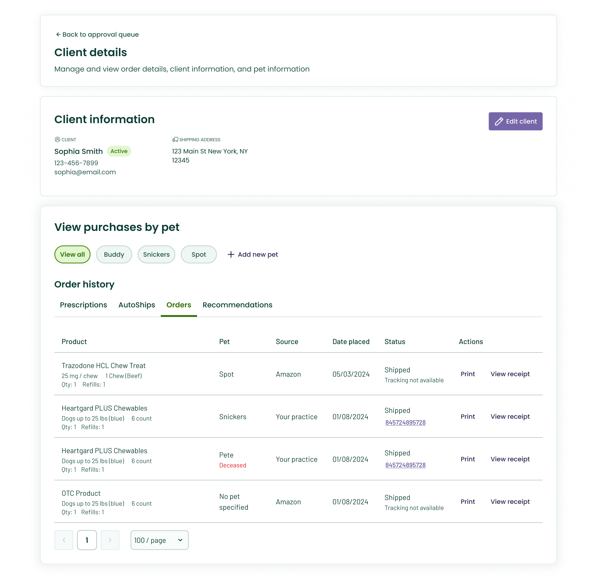
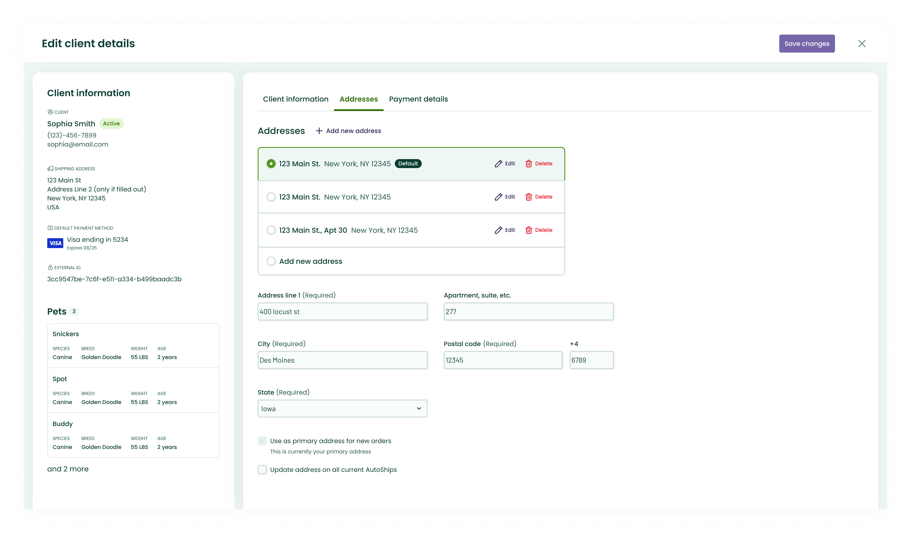
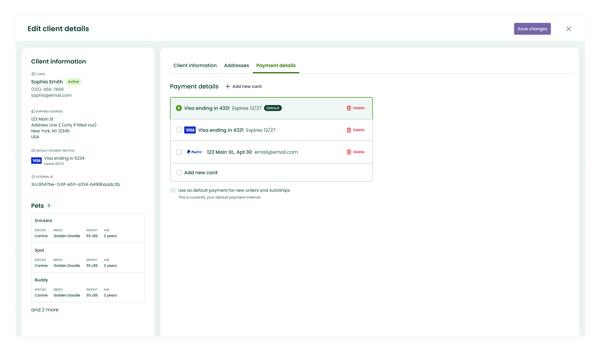
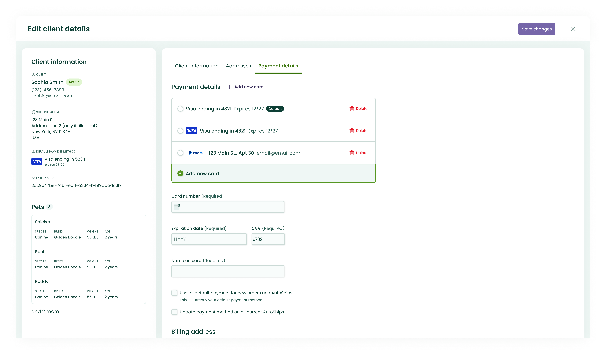
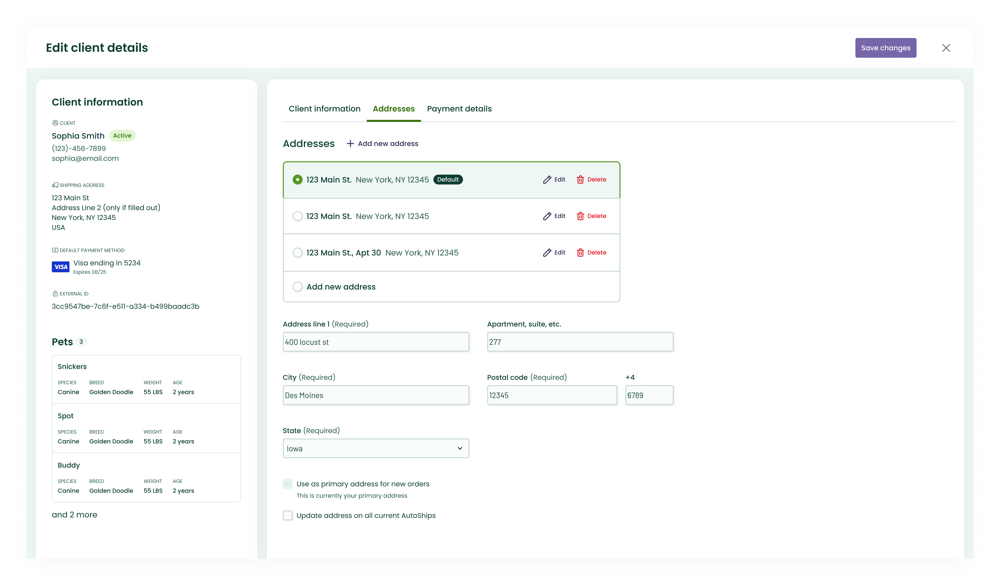
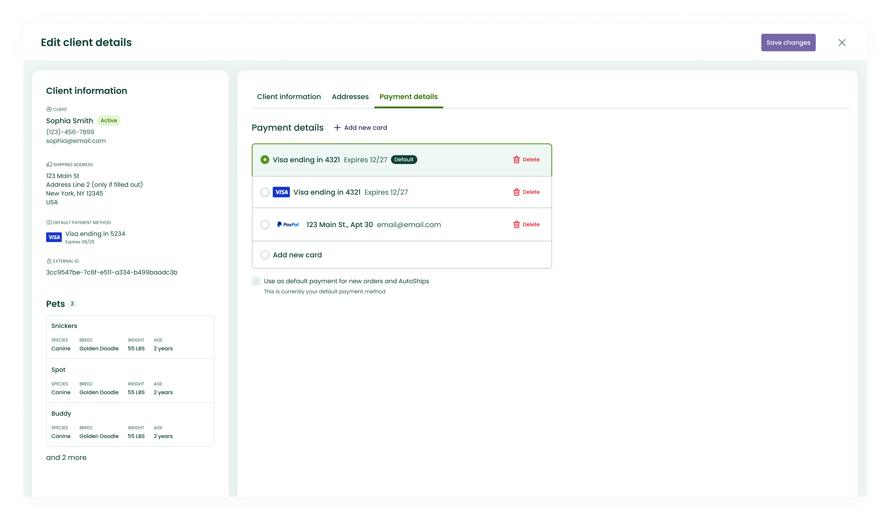
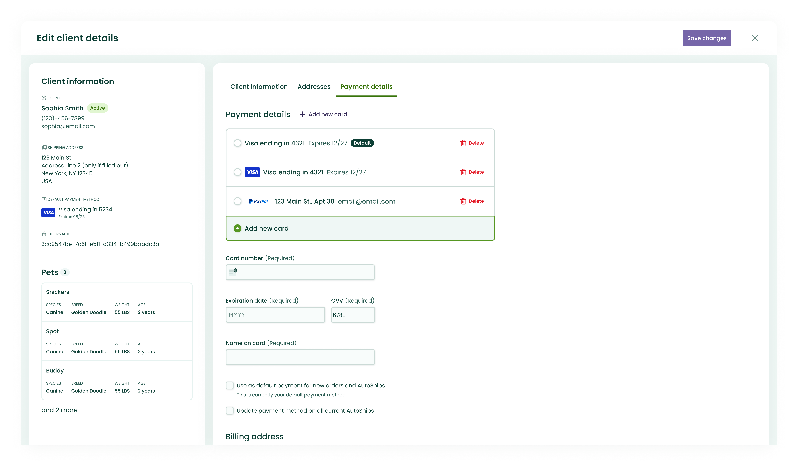

Client History Changes
The Problem
The client history view was housed within a side sheet that displayed key information such as contact details, pets, orders, and product recommendations. For long-standing clients, the volume of historical data often became overwhelming, making it difficult for practices to quickly locate and interpret relevant information. Additionally, the existing side sheet suffered from multiple bugs and structural limitations, resulting in content being truncated, difficult to read, and hard to navigate. The objective of this work was to redesign the experience to be more organized, scalable, and intuitive, enabling practices to access and understand client information more efficiently.
Iteration 1: Preliminary Designs, Interviews, and Moderated Testing
Initial designs focused on reorganizing the side sheet to improve information hierarchy and clarity, reducing cognitive overload while ensuring all necessary client information remained easily accessible. We took this research to practices to get their thoughts and test the usability of these flows.
Key Findings
- Overall, this was seen as a very slight improvement because the information did not overlap like the current experience
- The area was still too cramped for the likes of practices. It was slightly larger, but the information was still not laid out in an organized way that made the most sense to practices.
- Organization by pet was favored - they liked being able to see one pet's information separated out, a few practices even citing, "I just want to be able to see a pet and know their medications so I know what to do next."
Iteration 2: Refined Designs and Continued Testing
Following this round of research, I iterated on the designs, incorporating the collected feedback. I also gathered additional internal feedback from design and product partners, as well as veterinary professionals, with a focus on information architecture, hierarchy, and overall organization. These insights led to a significant redesign, which necessitated an additional round of usability testing.

Key Findings
- Practices were much happier with this organization. It was much more intuitive for them to select a pet and see their information per product
- This view was much more spread out and produced less bugs overlapping of data for the end user
- "This page loooks so much more up-to-date and is far easier to use than what you currently have. I cannot wait until I see it in my portal."
Final Designs and Handoff
At the end of this project, the handoff had to be split into multiple phases due to roadmap and engineering constraints. This forced me to think more about which features of the overall project were most impoortant to users and ensure those were handed off first, while compromising with product and engineering on timelines.
Phase 1: Page Creation and Sorting
- Moved the sidesheet to a page view, alleviating overlapping concerns and lost data
- Updated the page's sorting structure to allow users to view orders by pet, improving clarity and organization
- Implemented the first use case of the new company-wide page structure template, paving the way for other teams to do so
 



Phase 2: Adding and Editing Pet and Client Updates
- Transitioned large forms from a side sheet to a full-page takeover, reducing excessive scrolling and providing more space for content, resulting in a less overwhelming experience for users.
- Re-structured the "Edit Client Details" form to multiple sections depending on which category of features they want to update

 





Phase 3: Final Implementation
- Re-structured the table to sort by product instead of by order type
- Separated out orders and recommendations so practices understand which orders are still pending and which have been sent.